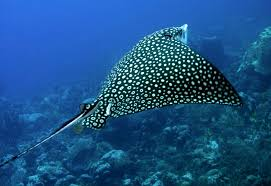

Introduccion
Los rayiformes, también conocidos como elasmobranquios, son un grupo de peces cartilaginosos que se caracterizan por su cuerpo aplanado y su forma de disco. Este grupo incluye las rayas y las mantas, que se encuentran en aguas marinas y dulces en todo el mundo.

Especies de Rayiformes
La raya manta es uno de los peces más grandes del océano, alcanzando longitudes de hasta 7 metros. Se alimenta principalmente de plancton, que filtra del agua mientras nada con su enorme boca abierta. Estas rayas son conocidas por sus acrobacias en el agua, realizando saltos y giros impresionantes.
La raya de espinas, también conocida como Dasyatis, es famosa por su capacidad de enterrarse en la arena. Tiene un veneno en su espina que puede causar dolor intenso a los depredadores. Su dieta se compone de pequeños peces y crustáceos que captura con su boca en la parte inferior de su cuerpo.
La raya eléctrica, como su nombre indica, es capaz de generar electricidad. Utiliza esta habilidad tanto para cazar como para defenderse. Puede producir descargas de hasta 600 voltios, lo que la convierte en una de las rayas más fascinantes y temidas de los océanos.
La raya gata es un pez de fondo que se caracteriza por su cuerpo aplanado y su coloración distintiva. Se alimenta de pequeños invertebrados y es conocida por su comportamiento tranquilo. Aunque no es agresiva, puede utilizar su cola espinosa en defensa si se siente amenazada.

La raya de cola de látigo es conocida por su largo y flexible cuerpo, que puede alcanzar más de 2 metros de longitud. Utiliza su cola para nadar rápidamente y se alimenta de crustáceos y peces pequeños. Esta especie se encuentra en aguas tropicales y subtropicales.

La raya manchada es reconocida por su patrón distintivo de manchas en su piel. Se encuentra en aguas poco profundas y se alimenta de invertebrados bentónicos. Su coloración le ayuda a camuflarse con el fondo marino.

La raya de labios gruesos tiene una forma única con labios prominentes que le permiten succionar alimento del fondo. Es un pez relativamente inofensivo y suele ser encontrado en aguas costeras de arrecifes de coral.
La raya del Atlántico es conocida por su gran tamaño y su capacidad para adaptarse a diferentes hábitats. Se alimenta de moluscos y crustáceos, utilizando su cuerpo aplanado para buscar en el fondo del mar.

La raya de suelo es un pez que se encuentra en aguas más frías y profundas. Tiene un cuerpo aplanado que le permite camuflarse con el fondo marino. Se alimenta de peces y invertebrados que encuentra en su entorno.
La raya de boca de succión tiene una boca ancha que utiliza para alimentarse de plancton y pequeños organismos marinos. Su apariencia es inconfundible, y es un pez que se encuentra en aguas costeras tropicales.

Tabla Comparativa de Rayiformes
| Nombre Común |
Nombre Científico |
Tamaño Promedio |
Rango de Distribución |
| Raya Europea |
Dasyatis pastinaca |
0.6 - 1.2 m |
Mar Mediterráneo y Atlántico oriental |
| Raya Espinosa |
Dasyatis centroura |
1.5 - 2.5 m |
Atlántico occidental |
| Raya del Atlántico |
Raja clavata |
0.6 - 1.2 m |
Atlántico nororiental |
| Raya de Espina |
Raja radula |
0.5 - 1.0 m |
Oeste del Pacífico |
| Raya de Manta |
Manta birostris |
4.5 - 7.0 m |
Océanos tropicales y subtropicales |
| Raya de Cintura |
Mobula mobular |
2.5 - 3.5 m |
Atlántico occidental y mediterráneo |
| Raya Pastinaca |
Pastinachus sephen |
1.0 - 1.5 m |
Océano Índico |
| Raya de Cola de Púas |
Urolophus spp. |
0.5 - 1.0 m |
Pacífico oriental |
| Raya de Aguja |
Taeniura lymma |
0.6 - 1.0 m |
Océanos Indo-Pacífico |
| Raya Manchada |
Himantura uarnak |
1.0 - 1.5 m |
Océano Índico y Pacífico occidental |